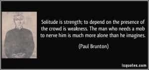
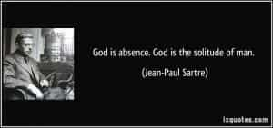
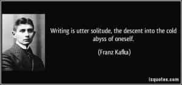
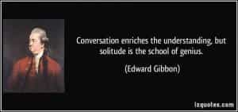

< < < Back
The Under-Appreciated Benefits Of Solitude – Return Of Kings
Down to Gehenna or up to the Throne, He travels the fastest who travels alone. — Rudyard Kipling
Our society (or the matrix of modern feminist societies) often puts enough social pressure on men to seek “relationships” or “alliances”—more so if these men are high-value to begin with. We are often told to lose ourselves in the arms of women and others, trying to seek an elusive “support”; whereas the reality remains that real strength often lies within ourselves.
Unless a man learns to trust his own body and mind and pursues self reliance—whether it may be psychological, physical and financial—his slavery remains indefinite to the society which seeks to enslave him.
Indeed, man is a social being. But realistically speaking, does the “social” expectation of seeking relationships make sense in the long run? In the end, the truth always reveals itself :the real test for a man is how he lives with himself, alone.

This is test which every man must face at some point of his life, even if he might presently be in a relationship.
Some of the men I’ve met who’ve been married or in relationships have admitted that the loneliest years of their lives were those when they were committed to those relationships. Some of them had in fact committed to these relationships because they had to fit in society – excluding the common reason of sexual thirst.
The failure to stand alone to decide for themselves has led to many men becoming victims of the herd mentality in modern feminist societies, especially when it comes to relationships with modern (substandard) women. But the end result was not up to their expectations. What good was “companionship” when it did nothing to drive away loneliness in their lives, to begin with?
The power of solitude

One common thing in the modern world is seeing people socially indoctrinated to strangle their own individuality into becoming “people pleasers” (mainly because of their inability to say “No”) which creates a self-created vicious downward spiral of servitude to others. This could also be due to self-loathing as well as an unregulated need of acceptance by others (social validation, or at worst, simply attention whoring), as commonly seen among modern women.
But with the feminization of modern men in modern feminist societies, it is common to see modern men often behaving likewise too. Sometimes the fear of loneliness can also stem from a convoluted belief that “herd membership” is powerful than being alone, which Harry Browne in his best seller How I found Freedom In An Unfree World explains as The Group Trap:
The Group Trap is the belief that you can accomplish more by sharing responsibilities, efforts, and rewards with others than you can by acting on your own. It’s an easy trap to fall into. It’s a common expression that “in union there is strength.” Just the opposite is true, however. You achieve more for yourself when your rewards are dependent upon your own efforts rather than upon the efforts of other people.
When you join a group effort to achieve freedom, you usually waste precious resources on an endeavor that has very little chance of success. In the same way, group efforts are common in businesses, marriages, and even friendships, and there too the Group Trap can cause subtle problems.
Innocuous as it may seem, the Group Trap continues to garner victims every day in today’s bluepill modern societies. The only way out is non-compliance to this trap, and solitude offers an option out.
We all have a threshold limit for everything—and that too includes human contact. A lot of men even experience it in their interactions with women.
Eady: You travel a lot?
Neil McCauley: Yeah.
Eady: Traveling makes you lonely?
Neil McCauley: I’m alone, I am not lonely.
– Heat (1995)
Solitude and loneliness are separate, with a thin dividing line between them. You can be single, yet not lonely. And it’s commonly see in self-actualized individuals who understand what solitude actually is, and what benefits it holds for self-discovery.
Withdraw within to discover the giant

The concept of solitude has fascinated humanity from antiquity – mainly because of the potential and opportunity it offers to tap within the hidden, infinite and mysterious source of power which resides in the depths of our souls.
In fact, solitude is one of the defining traits of many successful people – whether they might be great thinkers, scientists, and leaders—because they are able to distinguish themselves from the herd of common people.

In fact solitude is one of the core characteristics of the self actualized individual, as mentioned of Abraham Maslow’s Self Actualizer:
Self-actualizing individuals “positively like solitude and privacy to a definitely greater degree than the average person.
In today’s world, most men don’t know how to utilize solitude, because they’ve never truly discovered who they are. The thought of self-actualization and self-discovery is itself a scary thought for many, but what is forgotten is that the master often begins his quest for self-mastery through solitude.
Conclusion
Solitude is a wonderful example of self-commitment—a commitment we can renew periodically or regularly. In today’s world which programs men to bind themselves to unhealthy attachments, the empowerment that regulated solitude offers is often grossly underrated, or worse, sometimes even shamed.
As often, it is necessary to become qualified in our lives, but it is also important that others too qualify themselves to be a part of ours. In the end, the greatest companion we retain throughout our lives is the self, for it never leaves us during all of our days.
Read Next: Nikola Tesla Explains Why He Never Married


{kind=link}
{kind=link}
{kind=link}
{kind=link}
{kind=link}